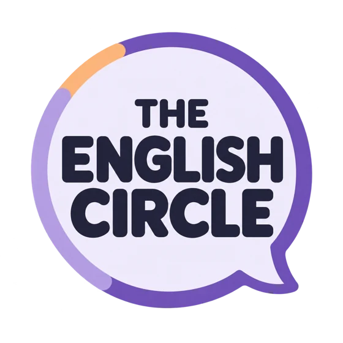
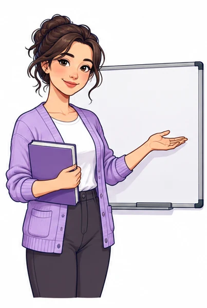
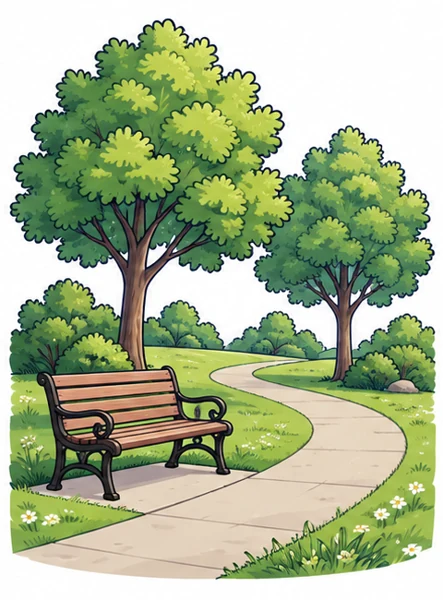
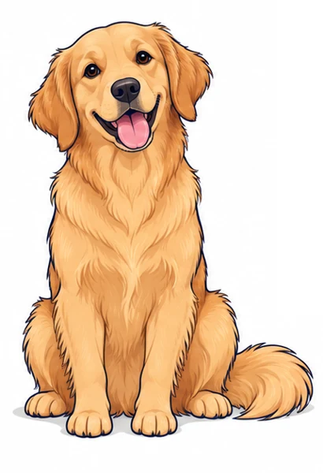
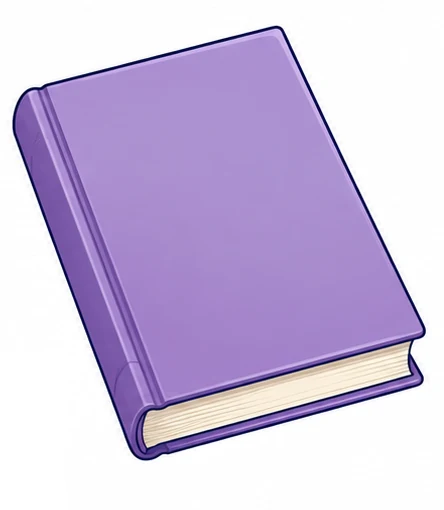

Nouns.
Sustantivos.
Personas, lugares, animales y cosas. Descubre las palabras que nombran y ponlas en práctica.
10 preguntas + un reto personal · Sin registro

Antes de practicar
Mira, recuerda y empieza.
The English Circle · Lesson 01
¿Qué es un NOUN?
Sustantivos en inglés desde cero
Ver el video en YouTube ↗¿Qué nombra?
Un noun es una palabra que nombra. Por ejemplo, dog nombra un animal.
Big dog / small dog: cambia el tamaño, pero el noun sigue siendo dog.
- Personas
- Lugares
- Animales
- Cosas
Tu práctica
0 / 10 respondidasUne la imagen con su nombre.
Elige la palabra que corresponde a cada imagen. Usa cada palabra una vez.




¿Qué palabra nombra?
Toca el noun en cada frase. Las otras palabras pueden describirlo.
Encuentra el noun en la oración.
Toca la palabra que nombra al animal o al lugar.
Paso a paso.
Responde las 10 preguntas. Puedes cambiar tus respuestas y volver a intentarlo.
0 respuestas comprobadas
01 · teacher, park, dog, book.
02 · book, teacher, dog, park.
03 · cat, park.
Consultar esta clave no cambia tu puntuación.
Tu práctica y tu reto personal se guardan solo en este navegador, si el almacenamiento está disponible. No se envían al profesor.
Ahora, mira a tu alrededor.
Elige tres cosas que veas y escribe sus nombres en inglés. Después, di las tres palabras en voz alta.
Reto personal: no tiene corrección automática ni suma puntos. Pregúntate: «¿Mi palabra nombra lo que veo?»
Necesito algunas ideas
book · phone · bag
Si quieres, dibuja tus tres cosas en una hoja y escribe sus nombres debajo.